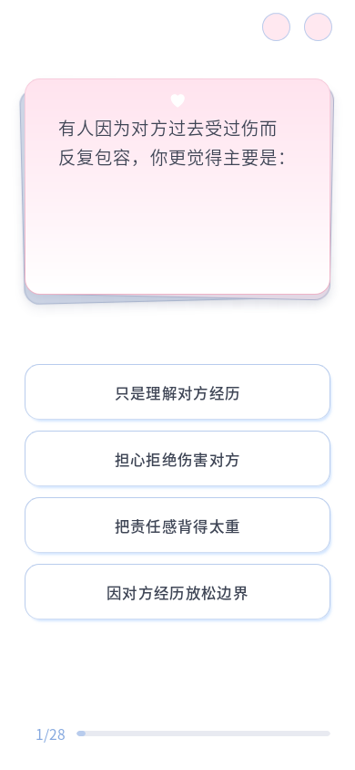

在当前值上累计：短选项最低高度 58.212px → 61.1226px，按钮间距 11.34px → 11.907px。长选项仍按自然内容增高，间距增量继续向组尾展开。
10 个视口 × 96 道题共 960 组通过：高度比例、实际间距、长文本完整、无重叠、进度可达、重复 resize 稳定；换题动画和 200% 字体检查通过。题库、HTML、布局与答题脚本均未修改。

布局验证数据 · 放大字体检查